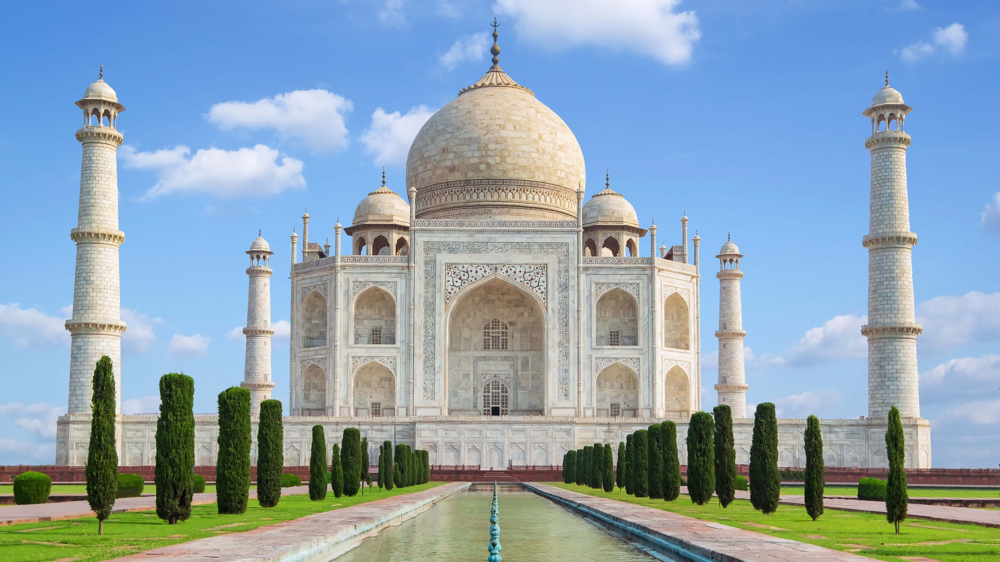
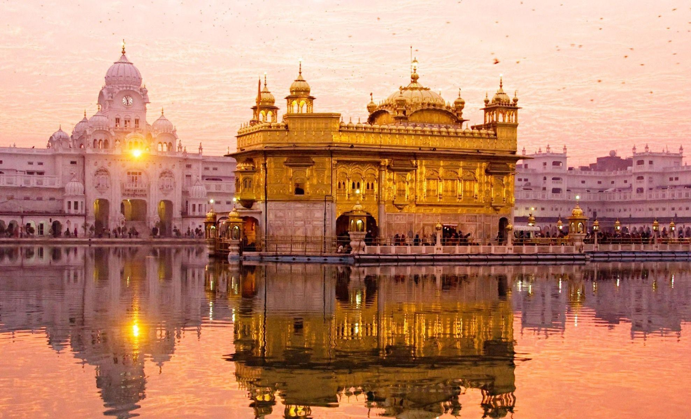
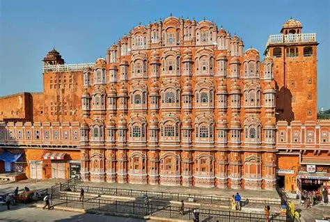

The Taj Mahal is a famous monument in Agra, Uttar Pradesh. It is known for its beautiful white marble architecture.

The Red Fort is a historical fort in Delhi. It is an important symbol of India's history and independence.

The Golden Temple is located in Amritsar, Punjab. It is a beautiful and important place of worship.

Hawa Mahal is a famous historical building in Jaipur, Rajasthan. It is known for its unique windows and architecture.

The Kerala backwaters are famous for their peaceful waterways, green landscapes, and traditional houseboat trips.